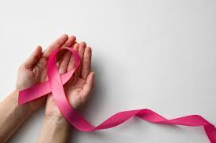

Outubro é um mês especial, marcado pela campanha Outubro Rosa, que visa conscientizar a população sobre a importância da prevenção e do diagnóstico precoce do câncer de mama. Essa campanha, que começou nos Estados Unidos na década de 1990, se espalhou pelo mundo e ganhou força no Brasil, unindo pessoas em uma luta coletiva.
O câncer de mama é o tipo mais comum entre mulheres, mas homens também podem ser afetados. Por isso, é essencial que todos estejam atentos aos sinais e sintomas. A mamografia é uma ferramenta fundamental para o diagnóstico precoce, recomendado anualmente para mulheres a partir dos 40 anos, ou antes, se houver histórico familiar da doença.
